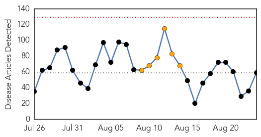
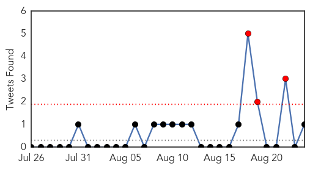
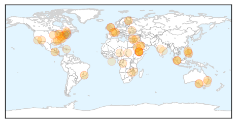
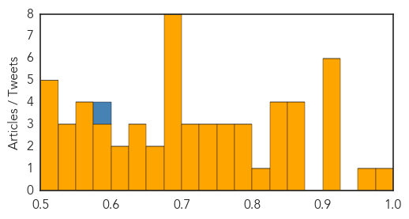

Toggle navigation
Early Warning
Daily Alerts
Unknown
Aug 24, 2015
Compare to:
-
Dengue Fever
Hemmorhagic Fever
Mold/Fungal Infection
Influenza
Meningitis
Pertussis / Whooping Cough
Middle East Respiratory Syndrome
Cholera
Hepatitis
Chikungunya
Yellow Fever
Bubonic Plague
West Nile Virus
Swine Flu
Ebola
Measles
Mumps
30 Day Trends
Web: 0
alerts
, 6
warnings
Twitter: 3
alerts
, 0
warnings
Top Articles:
Showing top 50 articles...
0.999
Saudi Arabia Reports 6 New Cases of MERS
0.956
Saudi Ministry of Health announces more cases of Corona VirusHealthcare
0.917
Chicago Tribune
0.917
Chicago Tribune
0.917
Chicago Tribune
0.917
Chicago Tribune
0.917
Chicago Tribune
0.905
Legionnaires’ Disease Sickens 127
0.872
WHO steps up health response in Yemen as humanitarian situation worsens
0.872
WHO steps up health response in Yemen as humanitarian situation worsens - Xinhua
0.871
WHO steps up health response in Yemen as humanitarian situation worsens
0.859
E. coli bacteria outbreak in Quebec makes 14 sick
0.843
Calicivirus killing pet rabbits in Adelaide’s south
0.843
Pet rabbits killed in virus outbreak
0.837
Private hospitals in Bohol to open TB DOTS centers
0.825
4 Filipino nurses now have Mers in Saudi Arabia
0.801
Critical health supplies reaching injured in southern Yemen
0.797
Superbugs Reach a Tipping Point
0.785
Yonkers School Positive for Legionnaires' Disease Bacteria
0.779
Health minister Laxma Reddy tells Adivasis to shun superstitions
0.773
Emergency services doctor 24/7
0.768
Possibly exposed to rabies? Wash the area, call your doctor
0.768
How Did A Rare, Vomit-Inducing Parasite Infect The Water Supply For 300,000 People?
0.749
Bacteria isolated at children’s hospital
0.742
Severity of algae in Iowa lakes increases
0.733
Three Panhandle Counties See Rise in Lyme Disease
0.720
Scientists unraveling the mysteries of rabbit fever
0.708
UA student being treated for TB; Hundreds more will be tested fo
0.706
Tours from Singapore to S. Korea cheaper after Mers outbreak
0.698
First Facility In Westchester Tests Positive For Legionnaire’s Bacteria
0.693
Michael Villaire named 2015 winner of prestigious Cecilia and Leonard Doak Health Literacy Champion Award
0.690
The Caledonian-Record
0.687
The mystery man who wrestled AK47 from the train gunman
0.687
A good year for French wine despite drop in production
0.687
French train suspect denies ties to terrorism
0.683
Still much left to do on neglected tropical diseases - News
0.677
Hollande and Merkel meet to tackle migrant crisis, Ukraine violence
0.667
Chronic wasting disease spreading among Michigan deer
0.652
4 W.Va. counties declared endemic for Lyme disease
0.644
SR1bn spent on treating Saudis abroad
0.636
Inadequate training affecting health service delivery
0.634
Fevers: Minister promises action
0.620
State campaign promotes HPV vaccine to area families - TheAlpenaNews.com
0.604
Lebanon’s garbage crisis deepens after weekend of unrest
0.594
Newborn dies in hospital after infection
0.590
Pneumonia kills 1 in 5 children below five years old – WHO
0.576
Niger: Influx of Nigerian refugees in the Diffa region continues
0.571
Health situation in North Darfur's Zamzam camp deteriorating - Sudan
0.568
Daw Park Repatriation Hospital job cuts not ruled out by SA Health in closure update for staff
0.557
Personal clothing may spread respiratory infections within the NICU
Top Tweets:
0.593
MERS: Despite obvious concerns so far the Hajj hasn't triggered spread of MERS though some Umrah pilgrims have become infected I think.
Web/News Articles

Tweets

Article Locations

Article Confidences
